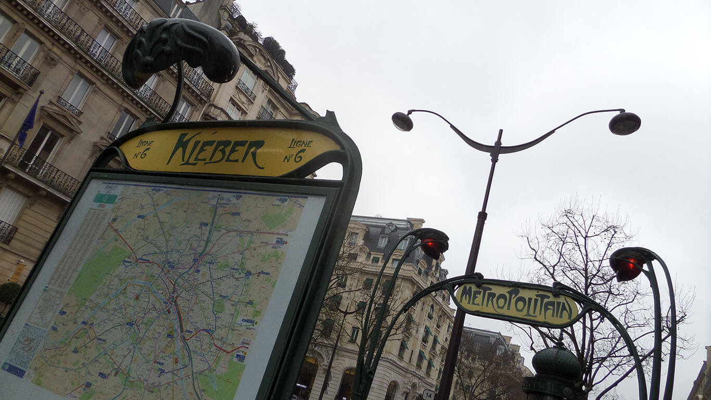

Que hacer 3 días en Roma
Todos los caminos conducen a Roma y una vez allí, que camino seguir? Entra acá que te digo cual.


Que hacer 3 días en París
Ciudad impresionante si las hay en el mundo, aquí encontraras todo para saber que hacer.